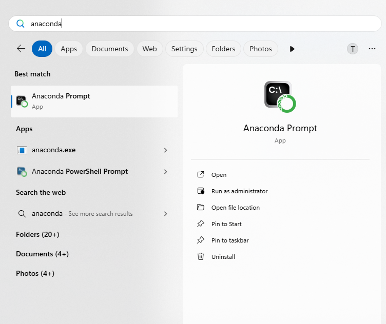

Anaconda and VSCode 安装指南
前言: 欢迎来到可选进阶教程部分。本节将介绍两款功能更强大、也更实用的工具：Anaconda 环境管理器和 VSCode 集成开发环境。虽然它们的初始设置稍复杂，但能极大地提升你的开发效率和管理能力。本节分为两部分：
-
Anaconda 部分：介绍如何使用 Conda 环境管理器来创建和管理独立的项目环境。
-
VSCode 部分：介绍如何在 VSCode IDE 中运行和调试 Jupyter Notebook。
1. Anaconda Tutorial
Anaconda 是一个专为 Python 和数据科学打造的强大平台，其核心是 Conda 环境与包管理系统。Python 的强大离不开丰富的第三方库，但由于这些库由不同的团队独立维护，它们之间的版本依赖往往错综复杂。例如，特定版本的 PyTorch 可能依赖特定版本的 NumPy。若将这些版本不兼容的库安装在同一环境中，极易引发难以调试的依赖冲突和运行时错误。
Anaconda 通过虚拟环境解决了这一问题。你可以为每个项目创建一个个完全隔离的独立环境，每个环境都拥有自己独立的 Python 解释器、包安装目录和依赖库集合。环境之间互不干扰。例如，你可以为数据可视化项目创建一个包含 Matplotlib 和 Seaborn 的环境，同时为深度学习项目创建另一个仅安装 PyTorch 的干净环境。这种方式既确保了每个项目依赖项的精确性和纯净性，也从根本上杜绝了项目之间的环境冲突。
a. 安装 Anaconda
- 访问 Anaconda 官方下载页面：https://www.anaconda.com/download/success
- 下载并运行适用于你操作系统的安装程序。
- 在安装过程的 “Advanced Options” 步骤中，建议只勾选最后一项：
Clear the package cache upon completion（安装完成后清除包缓存）。这可以帮助节省磁盘空间。

b. 创建环境
- Anaconda 安装完成后，通过开始菜单打开
Anaconda Prompt。这是一个专为 Conda 配置的命令行工具。

- 在
Anaconda Prompt中，直接输入以下命令：
conda init
这个命令会自动检测你的系统设置并完成初始化。完成后，关闭你当前打开的所有终端窗口（包括这个 Anaconda Prompt）。
- 在
Anaconda Prompt中，使用以下命令创建新环境：
conda create --name your_env_name
-
请将 your_env_name 替换为你喜欢的任意环境名称（例如：conda create --name arnold）。
-
当提示 Proceed ([y]/n)? 时，输入 y 并按回车确认。
-
恭喜！至此你已成功创建了一个全新的隔离环境。
c. 在环境中安装 Python 和所需库
首先，必须激活你的新环境，否则后续安装的包将会被安装到默认的 (base) 环境中，从而失去使用独立环境的意义。
使用以下命令激活环境：
conda activate your_env_name
激活后，请注意观察命令行提示符的开头，此时应显示你当前所在环境的名称（在本教程示例中为 (arnold)）。

新创建的环境初始为空。接下来，为你的项目安装特定版本的 Python：
conda install python
你也可以通过 conda install python=3.11 这样的命令来安装指定版本（将 3.11 替换为你需要的版本号）。
Python 安装完成后，你就可以像之前一样，使用 pip install [package_name] 在该环境中安装项目所需的所有第三方库了。所有这些库都将被隔离在此环境内部。请注意：即使同学们之前安装过python，我们仍然需要再次在新的环境中安装，因为新创建环境之后这个环境中是什么都没有的。
请安装 Jupyter Notebook：
pip install notebook
2. VSCode Tutorial
还记得IP课程用到的Dev C++吗？Visual Studio Code (VSCode) 比他强百倍。对于 Python 和 Jupyter Notebook 开发而言，VSCode 提供了出色的编辑、运行和调试体验，能够在一个统一的界面中高效地管理你的代码、环境和项目。
a. 安装 VSCode 和 Python 扩展
-
下载并安装 VSCode: 访问 VSCode 官方网站，下载并安装适用于你操作系统的版本。
-
安装 Python 和 Jupyter 扩展:
- 启动 VSCode。
- 点击左侧活动栏中的 扩展 图标 打开扩展视图。
- 在搜索框中输入
Python。 - 找到 Python 扩展，点击 Install 按钮。
- 同样方式，安装 Jupyter。
b. 在vscode中使用Jupyter notebook
为了让 VSCode 正确使用你创建的 Anaconda 环境，你需要为其设置正确的 Python 解释器。
- 创建新的jupyter notebook文件（文件名以.ipynb结尾）。
- 点击右上角
Select Kernel，然后点击Select Python Environment，选择我们刚创建好的环境。我们可以看到，使用Anaconda创建的环境会被标注为Conda Env，而如果不使用Anaconda，而是直接安装python和库的话，会被标注为Global Env。如果大家跟着基础教程走，而没有安装Anaconda，则选择Global Env。注：Kernel 就是运行代码的引擎，这里我们要选择刚刚在 Anaconda 里创建好的那个环境作为引擎。


-
选择完Kernel之后，Jupyter就知道你在写的是Python语言了，语法高亮就会显示出来了。
-
现在，你就可以在代码单元（Cell）中编写代码了。将光标置于某个 Cell 中，点击左侧的 运行 三角图标。运行结果会直接显示在 Cell 下方。